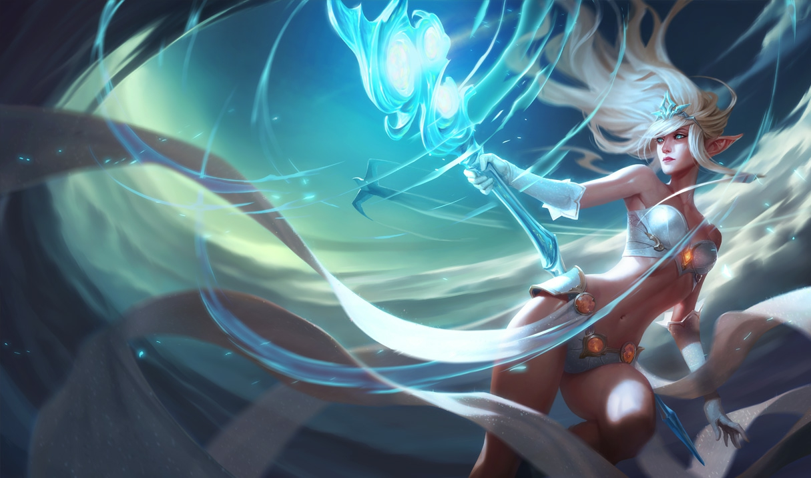
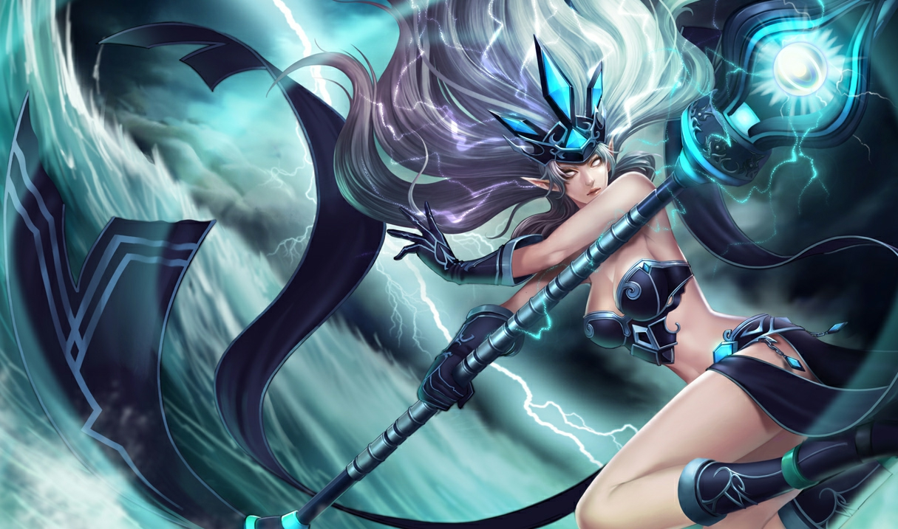
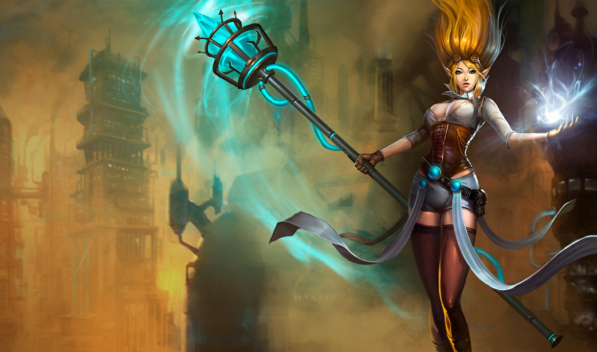
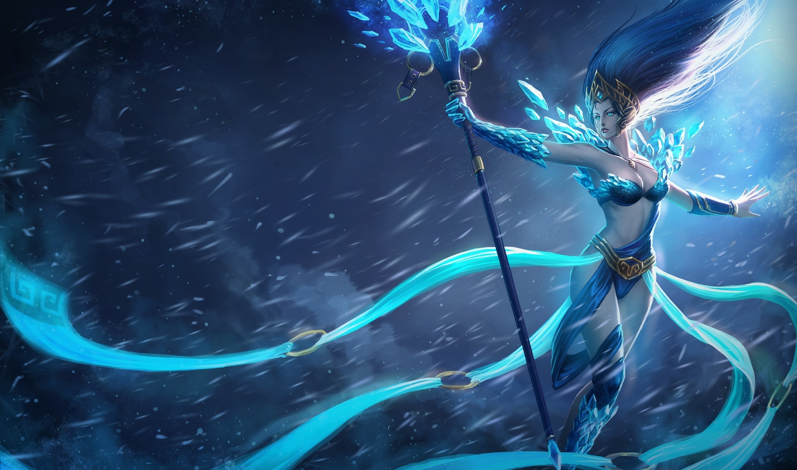
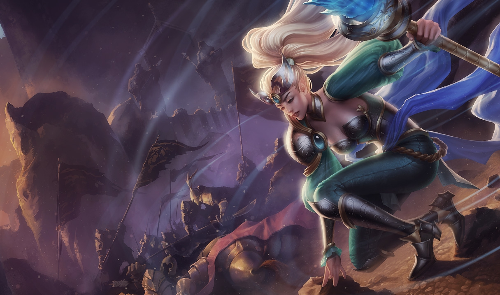
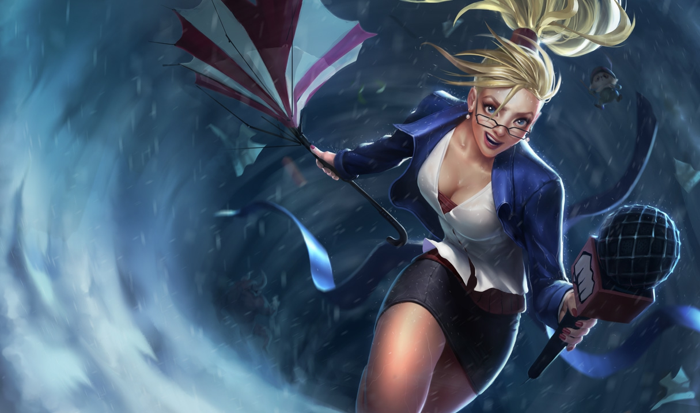

Janna
La Furia de la Tormenta
Vida: 590 (+90 por nivel)
Daño de ataque: 67 (+4 por nivel)
Velocidad de ataque: 0.625 (+2.25% por nivel)
Velocidad de movimiento: 345
Regeneracion de vida: 5 (+0.8 por nivel)
Armadura: 28 (+3.5 por nivel)
Resistencia Magica: 32.1 (+1.25 por nivel)
Historia
Hay esos hechiceros que se entregan a los poderes primarios de la naturaleza, renunciando a la práctica aprendida de la magia. Tal hechicera es Janna, quien primero aprendió magia como huérfana creciendo en medio del caos de Zaun . Janna supo que podía vivir en las calles. La vida era dura y peligrosa para la hermosa joven; ella sobrevivió por su ingenio, y por robar cuando los ingenios no eran suficientes.
La magia sin control que caracteriza a Zaun fue la primera y más atractiva herramienta que Janna descubrió que podía protegerla y elevarla. Janna descubrió que tenía una afinidad por un tipo particular de magia: la magia elemental de aire . Ella dominó sus estudios de magia aérea en cuestión de meses, casi como si hubiera nacido de ella. Janna pasó de ser una vagabunda callejera a ser una avatar del aire prácticamente de la noche a la mañana, asombrando y superando a quienes le enseñaron. Tal ascensión rápida también cambió su apariencia física, dándole una apariencia de otro mundo.
Buscando corregir la injusticia en el mundo (particularmente la locura de Zaun) Janna usa su talento para influir en el cambio donde puede. Ella es una voz para la regulación de la experimentación mágica y un partidario del desarrollo de la tecnología, haciéndola un aliado indirecto de Piltover y las mentes asombrosas de la tecnología que viven allí. A menudo es el centro de atención en las funciones, ferias de invención y otros eventos de celebración. Sin embargo, hay algo intocable en Janna, y sus afectos pueden cambiar tan rápido como el viento.
"No te dejes cautivar por La belleza de Janna. Como el viento, ella está a una ráfaga de la terrible destrucción”.
Aspectos
     Habilidades

Viento a Favor
Janna obtiene de manera pasiva 8% de velocidad de movimiento y los campeones aliados cercanos obtienen esta bonificación al avanzar hacia ella. Además, los ataques básicos de Janna infligen daño mágico adicional según su bonificación de velocidad de movimiento.

Vendaval Aullante
Costo: 60/80/100/120/140 de Maná Alcance: 1700 Cambiando puntualmente la presión y la temperatura, Janna puede crear una pequeña tormenta que aumenta de tamaño con el tiempo. La tormenta se lanza al activar de nuevo el hechizo.
Al lanzarla, esta tormenta se desplaza hacia la dirección en que fue arrojada, infligiendo daño y expulsando a los enemigos que se encuentren en su camino. Invoca un torbellino que inflige 60/85/110/135/160 (+35% Poder de Habilidad) de daño mágico a los enemigos que encuentre y los levanta durante 0.5 segundos. Puedes cargar el torbellino durante un máximo de 3 segundos.
Por cada segundo de carga: Inflige 15/20/25/30/35 (+10% Poder de Habilidad) de bonificación de daño Levanta a los enemigos durante 0.25 segundos adicionales Viaja un 25% más lejos Vendaval Aullante siempre llegará a su destino en 1.5 segundos. Si se activa de nuevo, el torbellino se lanza antes.
Céfiro
Costo: 50/60/70/80/90 de Maná Alcance: 550 Janna invoca un elemental de aire que aumenta de forma pasiva su Velocidad de Movimiento y le permite atravesar unidades. También puede activar esta habilidad para infligir daño y reducir la velocidad de movimiento de un enemigo. El efecto de la pasiva se pierde mientras la habilidad esté en enfriamiento.
Pasiva: Cuando Céfiro no esté en enfriamiento, Janna obtiene 6/7/8/9/10% (+[2% Poder de Habilidad]%) de Velocidad de Movimiento y se puede mover entre unidades. Activa: Inflige 55/100/145/190/235 (+50% Poder de Habilidad) (+0) de daño mágico a un enemigo y reduce su Velocidad de Movimiento un 24/28/32/36/40% (+[6% Poder de Habilidad]%) durante 2 segundos.

Ojo de la Tormenta
Costo: 70/80/90/100/110 de Maná Alcance: 800 Janna conjura un vendaval defensivo que protege a una torreta o un campeón aliado del Daño y aumenta su Daño de Ataque.
Escuda a un Campeón aliado o a una torreta durante 5 segundo(s). El escudo absorbe hasta 70/105/140/175/210 (+70% Poder de Habilidad) de daño y concede 10/17.5/25/32.5/40 (+10% Poder de Habilidad) de Daño de Ataque hasta que se rompe.
Monzón
Costo: 100 de Maná Alcance: 725 Janna queda envuelta por una tormenta mágica que rechaza hacia atrás a sus enemigos. Una vez pasada la tormenta, los vientos reparadores curan a los aliados cercanos mientras la habilidad se encuentra activa.
Invoca el poder del viento para hacer retroceder a los enemigos y restaura 100/150/200 (+50% Poder de Habilidad) puntos de vida por segundo a los aliados cercanos durante 3 segundo(s).